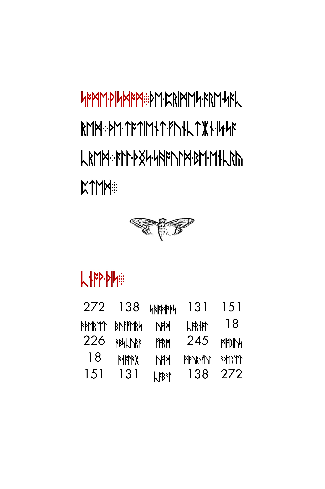

Philosophical themes in Liber Primus
Authority, identity, circumference, attachment and emergence across the known readings.
On this page
The known readings connect authority, identity, attachment and transformation. This guide follows those connections within the manuscript. Resemblance to a philosophical tradition is not proof that the authors belonged to it. Reading status follows the 5 October 2026 source snapshot.
A reading route through the ideas
Start with the complete passages, then use the explanations to compare them. This is a suggested route through four recurring questions, not the manuscript’s chapter order or a claim that it teaches one settled system.
What should you trust? Read A Warning alongside the final LP1 instruction. Notice the combination of questioning, inward discovery, and limits on imposing beliefs. Continue with knowledge and authority.
What counts as an identity? Read the first koan, then the second. Track how the first rejects descriptions and the second turns a thought into its own example. The koan guide explains each exchange.
What creates dependence? Read The Loss of Divinity all the way through its advice about wealth. Ask how possession differs from attachment, and why both dogma and reason appear. Use the page map and close reading to locate each claim.
What changes through the inward journey? Compare the Welcome with the final parable. Follow the recurring instar and emergence language, then connect it to circumference and the biological metaphor.
For the mathematical vocabulary, add Some Wisdom and the discussion of sacred arithmetic below. To read in manuscript order instead, use all known readings.
Keep a comparison another reader can check
For each connection, save the passage and page or section, the exact wording you are comparing, and a separate sentence explaining your interpretation. If you propose an outside source, add its specific passage or image and explain both the matches and differences. The concordance helps find repeated wording; the works index distinguishes documented puzzle sources from possible influences.
Text, interpretation and attribution
The page records preserve literal rune-label readings. Contextual English expands conventions such as U/V and NG/ING; it helps explain sentences but is not the exact sequence to use in a cipher or prime-sum calculation. Compare the transcription layers before drawing conclusions from spelling.
Three claims need different evidence: a phrase occurs in a known reading; two passages can be read together; an outside work was intentionally referenced. The first can be checked against the recorded decoding. The second is interpretation. The third needs a specific verbal or visual match and a defensible source, not just a shared theme.
Testing authority while preserving the book
Testing knowledge, certainty, and authority follows the warning through the later instructions, with manuscript previews and reproducible wording searches. It separates checking a claim, examining an identity, and directing other people.
For an outside text with a documented role in the earlier puzzle, see Emerson’s Self-Reliance. Its book-cipher use and its philosophical resemblance to these passages are separate connections. The close-reading comparisons locate Emerson’s arguments about conformity, consistency, and fortune in the preserved source.
A Warning asks the reader to test knowledge and find truth, yet also forbids alteration of the book's words or numbers. These instructions can be read together: question the message while preserving the object being examined. That reading helps explain why a research edition should show an original beside its corrections rather than silently replace it. It does not prove that archival practice was the author's intended meaning.
The final LP1 instruction returns to questioning and inward discovery, then adds a limit: impose nothing on others. Read alongside LP1-04's instruction to command one's own self, this suggests a distinction between directing oneself and directing other people. These passages are more specific evidence for personal autonomy than a generic label such as “individualist.”
The two koans: names and the inner voice
The dedicated koan guide explains the term, follows each answer in the first dialogue, and examines the second dialogue’s self-reference.
In the first koan, LP1-06–09, a master repeatedly rejects a student's answers to who they are. A name, occupation, species and account of consciousness do not satisfy the question. The exchange turns attention from descriptions of a person toward the act of identifying a self. The text explicitly calls itself a koan; that label alone does not identify a particular historical source, teacher or school.
The second koan, LP1-14–15, shifts the problem to the voice inside the head. The student's thought that they have no such voice becomes the master's example of it. This is a self-referential literary device: the attempted denial supplies the instance. It is not an empirical demonstration that every reader experiences thought in the same way.
Compare both with the Welcome's promised end to self. Does “self” mean the whole person, the descriptions used to identify them, or the narrated identity attacked in the second koan? The manuscript does not supply a formal definition that settles those alternatives.
Sacred arithmetic and the instruction to encrypt
Some Wisdom, LP1-05, makes three short assertions before the instruction “know this” and its arrangement of numbers and words. In contextual English, their sequence is:
- The primes are sacred. A class of numbers receives a religious or evaluative description.
- The totient function is sacred. The same description is applied to a mathematical function.
- All things should be encrypted. The passage shifts from describing what is sacred to prescribing what should be done.

This is an explicit connection between mathematical vocabulary and the book’s value language. It is stronger evidence for that connection than noticing a prime number elsewhere and assigning it a spiritual meaning. But “sacred” is not defined as a numerical test here. A prime is still defined by its divisors; the totient function counts positive integers up to a specified number that are coprime to it. Neither mathematical definition contains a claim about sacredness.
The encryption sentence is also an instruction, not a description of every page’s current encoding. Some Wisdom itself is a direct reading under the recorded rune-label conventions. The sentence therefore cannot serve, by itself, as proof that every readable passage must have another encrypted layer. A proposal for a second layer needs a defined input and operation, just as a proposal for an unsolved page does.
Read this beside primality and divinity: one passage calls primes sacred; another connects losing primality with losing divinity. The shared vocabulary makes an internal comparison worth pursuing. The texts do not state an equation between a person’s divinity and a word’s prime sum, or require applying the totient function to every rune. Those would be additional hypotheses.
To inspect the literal wording, run python scripts/reproduce_reading.py some-wisdom. It retains FUNCTIAN and THNGS, where the contextual English above uses FUNCTION and THINGS. See the rune-label conventions before treating those differences as alterations to the manuscript.
Circumference, primality and divinity
The Loss of Divinity, LP1-10–13, assigns three behaviors to the circumference: consumption, preservation and adherence. It connects consumption and preservation with fear of insufficiency or inability to recover what is lost. Adherence includes following either dogma or reason for the sake of belonging and being right. The target described is therefore not simply religion; the same motive can attach to reason.
The second koan associates the inner voice with circumference. LP2-57's parable asks for the shedding of circumferences and the discovery of divinity within. Reading these occurrences together supports interpreting circumference as a surrounding or limiting aspect of identity. That is a textual interpretation, not a geometrical decoding rule.
The Loss of Divinity also uses “primality.” The primality and divinity guide compares all recorded occurrences and explains the distinction between arithmetic and metaphor. This connects naturally to prime-valued runes and the manuscript's numerical vocabulary, but the word does not establish which numbers to calculate. A numerical hypothesis must still name its input and boundaries; see reproducing prime sums.
Possession and attachment
The section that criticizes consumption and preservation also tells the reader to amass wealth, avoid attachment to possessions and be prepared to destroy them. Calling the passage a simple rejection of material possessions would miss that tension. A closer reading distinguishes possession from dependence on what is possessed. Whether the commands are literal, rhetorical or initiatory is not established by the decoded words alone.
The same section ends by commanding the reader to program mind and reality. The close reading of that instruction considers its position after the account of dependence and explains what the wording leaves unspecified.
The inward journey and emergence
The Welcome links going inward with emerging outward and invokes an instar. LP2-57 repeats the instar image, tunneling, the shedding of circumferences and emergence. This repeated vocabulary connects two distant sections more directly than an outside theory does. Compare LP1-04 with LP2-57.
The imagery permits a reading of transformation through inward examination. It does not by itself identify a biological species, a specific ritual, or a cipher key. The language of death and an end to self also belongs to this literary context; the known reading does not establish an operational instruction for a solver.
Outside works: start with a checkable parallel
The referenced works and possible influences index brings together documented book-cipher sources, cover artwork identifications, and literary comparisons, with the status of each connection.
William Blake and The Marriage of Heaven and Hell compares a close verbal parallel in LP1-04 with its external text. This is a more precise starting point than assigning the whole manuscript to a single movement. A possible allusion in one sentence does not automatically identify the source of its artwork, mathematics or other teachings.
The instruction following the first koan also has a possible literary association with Lewis Carroll's impossible-things dialogue. The wording, number and action differ; the comparison is weaker than a close verbal match.
For a closer reading of the three behaviors and the advice about wealth, see consumption, preservation, and adherence.
Sources and further reading
This is a close reading of the compiled known readings, supported by the linked page records and complete-section guides. For reproduction, use Running the reproduction scripts. The connections here are editorial interpretation, not additional decrypted text or authenticated statements of authorial intent.
Follow the recurring term in circumference, identity, and emergence, or use the known-reading concordance to locate a word or phrase yourself.
Manuscript pages discussed
LP1-01 · LP1-03 · LP1-04 · LP1-05 · LP1-06 · LP1-07 · LP1-08 · LP1-09 · LP1-10 · LP1-11 · LP1-12 · LP1-13 · LP1-14 · LP1-15 · LP1-16 · LP2-57
Guides linking here
- Start solving: a practical introduction
- Referenced works and possible influences
- Testing knowledge, certainty, and authority
- William Blake and The Marriage of Heaven and Hell
- Instars, cicadas and emergence
- Four unreasonable things and Lewis Carroll
- Newton: the upper compasses panel
- Emerson’s Self-Reliance and the opening book cipher
- The two koans: identity and the inner voice
- Branches and trees
- Circumference, identity, and emergence
- Consumption, preservation, and adherence
- Primality and divinity